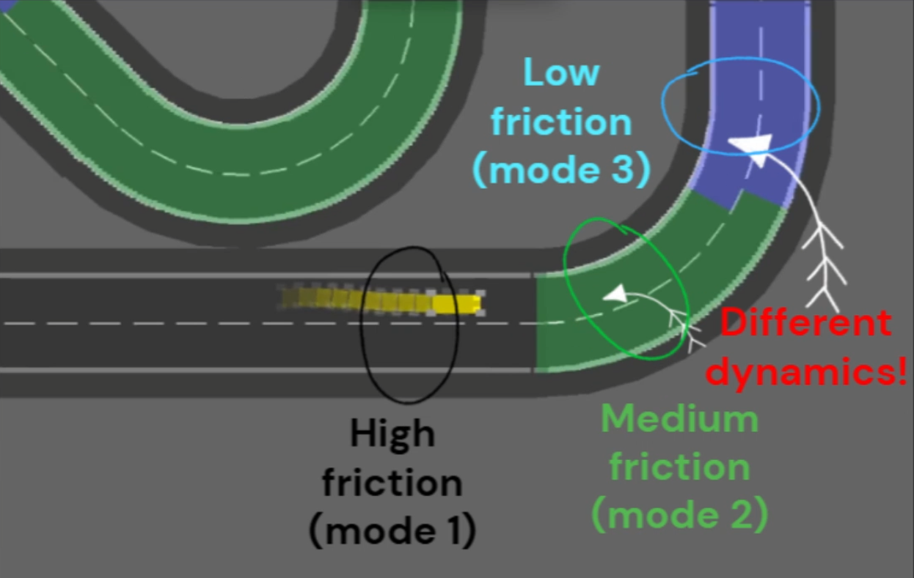
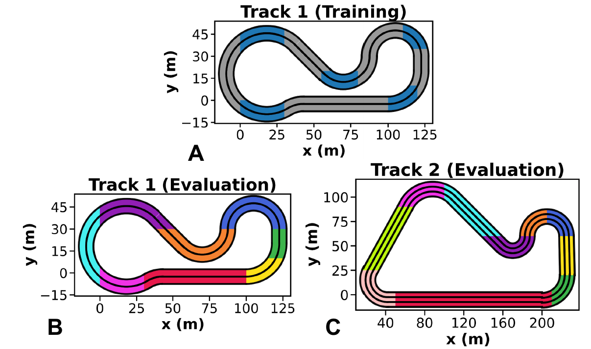
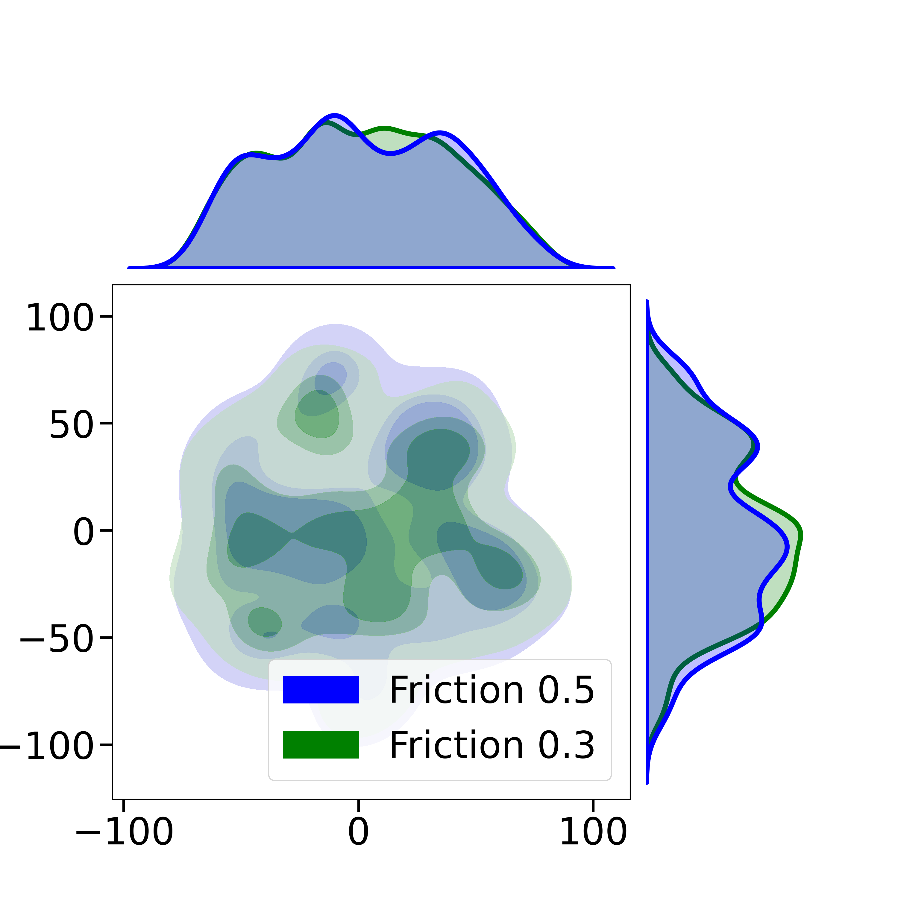
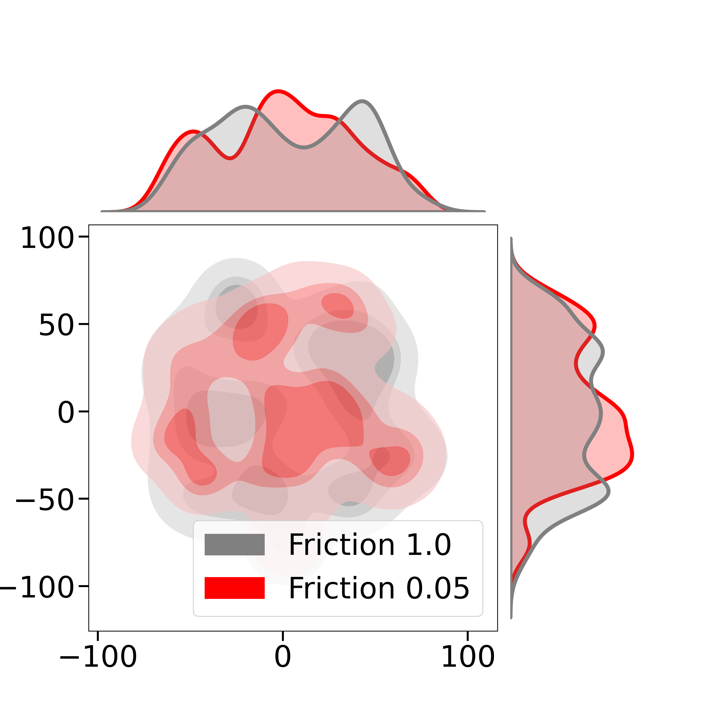
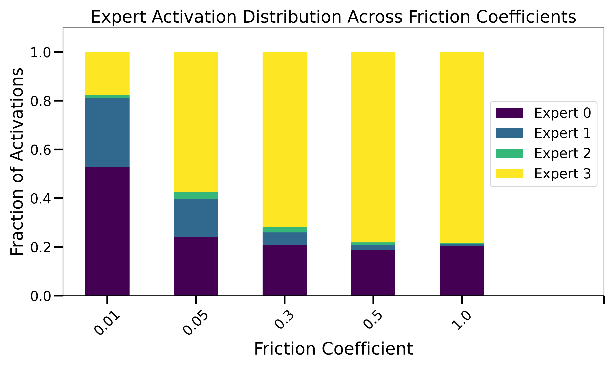

SAC-MoE: Reinforcement Learning with Mixture-of-Experts for Control of Hybrid Dynamical Systems with Uncertainty
Paper (pre-print)Codebase
Overview of hybrid systems and their challenges


Hybrid Systems
Hybrid systems combine continuous dynamics models with discrete event processes. For example, different surfaces (e.g., asphalt, gravel, slippery) induce different dynamics in an autonomous racing vehicle driving on a racetrack. Each of these dynamics models is called a mode and the environment (partially or completely) governs the discrete events that result in switching between these different modes.
Our problem statement
In our work, i) the parameters that affect mode dynamics (e.g., friction coefficient, aerodynamic parameters) and ii) the environment processes that contribute to switching between different modes are unobservable.
Our solution (SAC-MoE)
Controllers fail to control hybrid systems if they do not account for abrupt switching between different dynamics modes. We propose SAC-MoE that addresses the problem statement by learning to adaptively compose behaviors across learned experts to account for differing mode dynamics and discrete switching.
Motivating SAC-MoE by investigating switching policies
A simple control solution that immediately comes to mind for such systems would be to switch between optimal policies specific to different modes. This section shows the pitfalls of using such an approach and discusses why these arise.
Hybrid system under consideration
We use a perturbed kinematic bicycle model for this test with dynamics with i) state \( s=(x,y,\theta,v) \) where \( \theta \) is the heading angle and \( v \) is the speed and ii) control \( a=(\psi, a_{\text{long}}) \) where \( \psi \) is the steering angle and \( a_{\text{long}} \) is the longitudinal acceleration. The pertubation terms are parametrized by a latent mode parameter, \( \mu \) which takes values in \( \{0, 6\} \).
Visualizing optimal mode-specific policies
We first compare the behaviors generated by two policies \( \pi_{1} \) and \( \pi_{2} \) that are optimal for \( \mu = 0 \) and \( \mu = 6 \) respectively. Clearly, for the same initial point, the action sequence and state trajectory are very different over the episode.
Discrete switching between optimal policies
We now consider an environment which switches between different modes based on the position in the workspace. The switching policy picks Policy 1 if \( \mu = 0 \) defines the mode at the current position and alternatively picks Policy 2 if \( \mu = 6 \) defines the mode (assuming an oracle tells us the current value of \( \mu \)). Below we see that the switching policy switches between conflicting policies abruptly, resulting in a myopic controller. It generates suboptimal trajectories that fail to reach the goal and can even get stuck at mode switching boundaries.
Takeaways
These challenges motivate the use of an architecture that retains the benefits of switching policies while addressing their shortcomings. We highlight the similarities and differences between our proposed approach (SAC-MoE) and switching policies further in the paper.
Motivating adaptive curriculum approaches
Some hybrid environments can have mode switching behavior that makes learning an effective control policy significantly harder than other hybrid environments. We demonstrate this point below.
The paper discusses how prior work with contextual MDPs uses random context sampling for training. Below, we show the effects of training with an adaptive curriculum that learns to prioritize data collection in "harder" training environments by comparing three policies (SAC, SAC-UPTrue baselines and our proposed SAC-MoE) each trained separately using a random curriculum (RC) and adaptive curriculum (AC).
Visualizing results in easier environments
We first visualize policy behaviors in a relatively easy high friction environment without any mode switching. We observe that the RC-trained policies are slightly faster than the AC-trained policies across all models.
Visualizing results in harder environments
We now test if the success of the RC-trained policies from above generalizes to harder environments with more challenging surfaces and abrupt mode switches.
Takeaways
We observe that the adaptive curriculum does significantly better across all models which
- Validates that different environments have varying difficulty levels which requires learning policies that can generalize to diverse hybrid environments.
- Demonstrates the importance of using an adaptive curriculum to avoid overfitting to the easiest environments and ignoring performance on harder environments.
Demonstrating SAC-MoE's performance improvements
Considering that the adaptive curriculum generates performance improvements across all policies, the results we show henceforth are assumed to use that training approach. The training and evaluation tracks are shown below (each box of a specific color can be assigned its own mode). The videos compare an oracle baseline that obtains ground-truth mode information (SAC-UPTrue) against our proposed approach (SAC-MoE).

Results on the original track layout (Track 1 evaluation)
We first compare policies on the original track layout but using environments with modes and mode switching that were never observed during training. We observe that SAC-MoE consistently covers more of the track than SAC-UPTrue despite not knowing the mode parameter active at the current timestep and exhibits an understanding of how to brake at crucial parts of the track to account for mode switching and prevent crashes while still achieving fast laptimes.
Results on the unseen track layout (Track 2 evaluation)
We now compare policies on an unseen track layout. Once again we observe that SAC-MoE does significantly better than the oracle baseline and demonstrates a better understanding of the occupancy grid observation and how it must be incorporated into the control policy to generate behaviors across mode switches that prevent crashing.
Takeaways
SAC-MoE consistently outperforms the baselines we compare against across a variety of zero-shot generalization tasks that encompass unseen track layouts, unseen modes of the autonomous vehicle dynamics and unseen mode switches, while not receiving explicit information about these latent parameters.
Demonstrating SAC-MoE benefits on legged locomotion (Walker2D)
Comparing performance against oracle policy (SAC-UPTrue)
Similar to the racetrack results, we observe the SAC-MoE outperforms the oracle baseline and consistently achieves good performance across diverse hybrid environments.
We visualize the torso angle trajectories generated by both policies across the environments since this variable is crucial to determining whether the system becomes unstable. We observe that SAC-MoE's policy tries to match a reference torso angle trajectory generated by a policy that was trained and tested on a single mode (high friction), demonstrating its ability to stabilize the system even under abrupt, drastic mode switching.
Visualizing how the router composes learned experts across different contexts
From the videos below, it is clear that SAC-MoE yields similar state trajectories on modes with similar mode parameters and distinct trajectories across dissimilar modes.
We further demonstrate this using a tSNE plot of the states collected across an episode for each different context. It is clear that the tSNE distribution for dissimilar modes have peaks in distinct locations, in contrast to similar modes.
 
We observe that this difference in state distributions causes different expert subpolicies to be activated by the router over the course of the episode. This indicates that the MoE architecture implicitly understands how different mode dynamics affect the policy to be used, despite not receiving mode information. As a result, it draws on information from additional experts as the difficulty of the environment context increases (lower friction modes in this example).

Code
We will make our code publicly available.